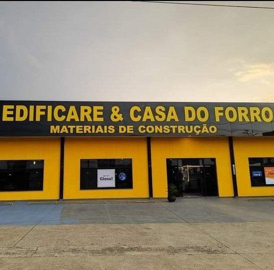

Quem somos
A Casa do Forro nasceu em 2020, na região da Castelo Branco, em Guarapuava, em um espaço simples de aproximadamente 10x10 metros. Desde o início, o objetivo foi claro: oferecer soluções de qualidade no segmento de forros e acabamentos, atendendo com dedicação cada cliente que acreditava no nosso trabalho.
Já em 2021, impulsionados pelo crescimento e pela confiança conquistada, demos um passo importante: inauguramos uma nova loja na Vila Bela, em frente ao posto de saúde. O novo espaço, mais amplo e estruturado em três níveis, incluindo um mezanino, marcou uma nova fase da empresa.
Foi ali que consolidamos nossa presença no mercado, ampliamos nosso portfólio e passamos a trabalhar com marcas reconhecidas pela qualidade e durabilidade.
Entre elas, destacam-se a Plastilit, oferecendo produtos de excelente custo-benefício e padrão de primeira linha, e a Plasbil, referência como uma das maiores fabricantes de forros da América Latina, especialmente pelos seus consagrados forros vinílicos.
Seguindo em constante evolução, a Casa do Forro iniciou um novo capítulo. Hoje, estamos localizados no bairro Ferroz, na marginal da BR, sentido Palmerinha — um ponto estratégico que reforça nosso compromisso em estar cada vez mais acessíveis aos nossos clientes.
Mais do que uma loja, a Casa do Forro representa dedicação, crescimento e confiança construída ao longo dos anos. Seguimos firmes, buscando sempre oferecer qualidade, variedade e um atendimento que faz a diferença em cada projeto.
